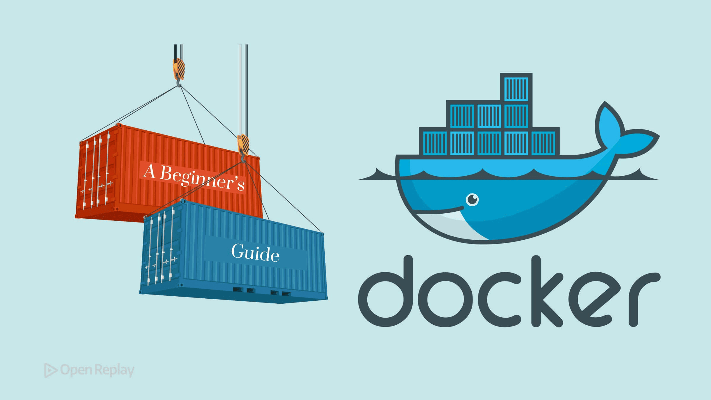

|
Gian Danovan Mon 14 Sept 2026 |
AI Is Already Better at Coding Than Most Software Developers
#Disscus #ai #Programing #Wedev
...but let me say this right away: coding was never the most valuable part of software engineering.
I remember when I was a junior software dev. Nothing came easily to me. Every feature felt like an uphill battle. I can't even count how many hours I spent digging through Stack Overflow. And then there was the stress of PR reviews, where I sometimes got absolutely roasted in the comments (rightfully so!) 😅
Eventually, things started getting better and better. Shipping features took me less time, and there were fewer comments on my pull requests. Over time, I started handling more complex things, including architecture. I could choose the right solution, explain why a particular tool or design pattern made sense, and defend my decisions.
And I loved being good at coding. Domain knowledge or architectural concerns? Those were somewhere in the background.
Then Coding Stopped Being the Hard Part
The longer I worked as a developer, the more complicated the problems became, and the less they had to do with coding itself.
I stopped getting excited about every new framework feature. In fact, whenever I heard about another "revolutionary" solution, my first thought became something along the lines of: "Yet another state management solution..." (I'll probably write a whole article about that someday.)
Eventually, I ended up where every tech lead eventually ends up: spending most of my time thinking things through, sitting in calls, and getting people to agree on things, while handing coding tasks to juniors and mids. Much to their delight, actually, because they're happy to get a chance to learn something new.
Fortunately, I still code quite a lot, but these days it's usually the more horizontal stuff or the technically difficult features.
And that's exactly the point in my career when the AI revolution arrived.
And I Welcomed AI With Open Arms
I was genuinely happy about it! I'm not crying over the fact that I no longer have to handcraft every precious little piece of artisanal code myself. I didn't particularly want to anyway.
@nazar-boyko recently asked in his article, "Has AI Made You A Lazier Developer? Be Honest." I answered honestly: no. Quite the opposite. AI has made me less lazy. I do more because I don't have to spend as much time on the most boring part: writing redundant code.
And in my opinion, AI is already better at shipping code than most software developers.
There is actual research behind this, some of which I've linked at the bottom of this article, so you can check that I'm not just making things up. 😉 The research shows that AI can dramatically accelerate coding and that frontier AI agents can already complete some coding tasks that would take humans days or even weeks.
And we often see this in our own work. AI doesn't get tired. It doesn't get stressed. It doesn't get distracted. It doesn't have a "bad day." (Okay, sometimes I swear it does )
Not All Developers Are Equally Good at Coding
And let's face another uncomfortable truth: there are better and worse developers.
I know that's not particularly pleasant to say, but it's simply true. Some people are better at cooking. Some are better at singing. Some are exceptional at coding. And some are... a little less exceptional.
Sometimes I get the impression that here on DEV, we treat programmers as some kind of meritocratic class of geniuses. As if every developer, by definition, possesses an extraordinary set of irreplaceable skills. But everyone who has spent enough time in this industry knows that's simply not true.
And AI might actually level the playing field here. A developer who isn't an exceptional coder but is responsible, understands the product really well, makes good decisions, and knows what needs to be built can now go incredibly far.
But There's One Tiny Little Detail
There's just one small, tiny detail. Something we intuitively understand, and something the research I've linked below also hints at: The further the job moves away from simply generating code, the less spectacular the machine's advantage over humans becomes.
In an older study, experienced developers actually worked SLOWER when using AI.
More recent results suggest that newer AI tools probably do speed them up, but the effect is nowhere near as straightforward or spectacular as the raw coding benchmarks might make you think.
In general, the more the work depends on experience, judgment, coordination, and higher-level decisions, the less useful "how fast can this thing generate code?" becomes as a measure of productivity.
And I know exactly why.
Five Minutes of Coding. Four Days of Engineering.
Recently, I had to introduce a change to an application that would probably take a coding agent — even a not particularly brilliant one — about five minutes to implement.
So what was the problem? Discussing WHAT that change should actually look like, coordinating it with all the teams involved, and agreeing on the final solution with the client took FOUR DAYS. During those four days, the decisions changed several times.
And let me add something important here: having a developer in those meetings, and preferably an experienced one, was absolutely necessary.
The implementation took five minutes. Figuring out what should be implemented took four days. And that is exactly the difference between coding and software engineering.
Coding Is Becoming Cheaper. Engineering Isn't.
See what I'm getting at? AI is taking repetitive, derivative work off our shoulders. It does that work faster than we do. Often better than we do. It doesn't get tired while doing it, and it doesn't get stressed.
And because of that, the skills the market needs from developers are shifting. If all you can do is code, and an agent can now do that faster and better, you might soon have a problem on the job market.
But if you feel like an agent can do the work you used to give to your junior developers, while you still have to guide it by the hand when it comes to details, architecture, trade-offs, and all the weird little realities of an actual production system, you're in a very different position.
Mine, for example, generated a dropdown today that was permanently open and literally couldn't be collapsed. 🤣
If you understand the bigger picture, know how to make technical decisions, understand the product, and aren't afraid of innovation, your job is probably safe.
At least for now. 😅
So yes, AI getting better at coding doesn't make software engineers less valuable. It makes coding itself less valuable as a software engineering skill.
BTW if you liked this post, you can also follow me on LinkedIn.